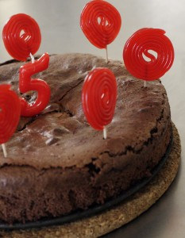

En Valencia, el 9 de Octubre es el Día San Dionís, el santo patrón de los enamorados, los dones son frutas y verduras hechas de dulces de mazapán. Estos hemos hecho nosotros.

En Valencia, el 9 de Octubre es el Día San Dionís, el santo patrón de los enamorados, los dones son frutas y verduras hechas de dulces de mazapán. Estos hemos hecho nosotros.


Esto es un regalo estupendisimo que han recibido mis hijos de nuestra vecina Josefa. Un tupa de todos los ingredientes ya con la medida que toco,…
Leer más →
Hemos cortado bizcocho en prismas, con forma de cuadrados y triángulos. Pegamos, con una mezcla de azúcar glas y limón, un trocito de galleta y oblato…
Leer más →